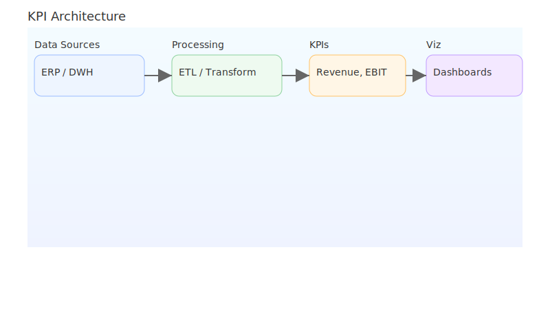

Quarterly Earnings Report
Q2 FY2025
Prepared by: Technical Consultant
Contact: 24ds1000138@ds.study.iitm.ac.in
Reconciliation Snippet (Python)
import pandas as pd
df = pd.read_csv("gl_export.csv")
rev = df[df["account"] == "Revenue"].amount.sum()
opex = df[df["account"].str.startswith("OPEX")].amount.sum()
ebit = rev - opex
margin = ebit / rev
print(f"EBIT Margin: {margin:.2%}")
Source control link and CI artifacts available in the repo.
Financial Formulae
Return on Equity (ROE): \( \text{ROE} = \frac{\text{Net Income}}{\text{Average Shareholders' Equity}} \)
Weighted Average Cost of Capital (WACC): \[
\text{WACC} = \left(\frac{E}{V}\right)R_e + \left(\frac{D}{V}\right)R_d (1 - T_c)
\]
Net Present Value (NPV): \( \text{NPV} = \sum_{t=0}^{n} \frac{C_t}{(1+r)^t} \)
Quarterly Performance
Tip: Resize the window—chart resizes automatically.
Operating Model

Outlook & Guidance
- Revenue growth expected to be within guidance range.
- EBIT margin expansion via opex discipline.
- Capital allocation: focus on tech, risk, and compliance.